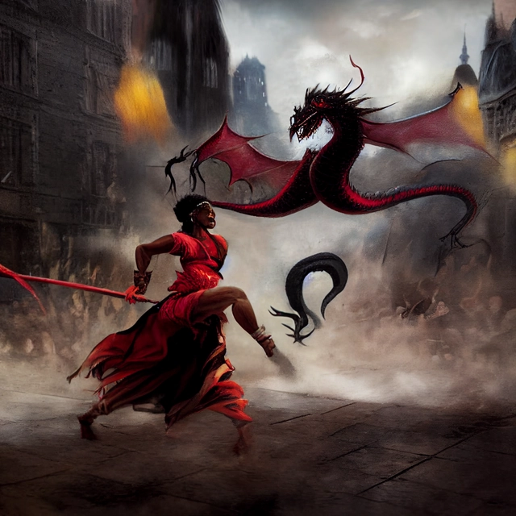

"Ouch!" Galena was on the verge of losing consciousness. She had been relentlessly attacking the dragon's massive body for what seemed like an eternity now. Her arms were covered in cuts and burns as she tried to block every blow that came her way. A crackling sound filled the air. Something was burning inside the dragon's belly. The monster was bleeding out. This was it! Galena would finally be able to end the battle. Suddenly, another huge force hit Galena. It threw her off balance and forced her to land painfully on her backside. Where did this blast come from? The dragon let out another burst of fire before falling over. Galena looked around for the source of the attack. Then she saw it. A woman dressed in black stood a few feet away from the beast. She had short-cropped red hair that shone silver when the light hit it just right. Her skin was dark like mine. And her eyes were blue. The woman held a sword in her hand and a bow slung across her shoulder. A quiver of arrows was attached to the belt around her waist. There was something strange about the woman. No, not just strange. There was something wrong with the woman. Galena could sense that. She sensed evil in the air. The witch fought the urge to shrink away. The woman lifted her head and stared at the dragon. The creature looked down upon its attacker. It roared and raised its claws to strike. That was when the woman released her arrow. It struck the dragon in the middle of its forehead. The creature's head exploded. Red blood spattered everywhere. The crystal shards embedded in the dragon's flesh started to glow. They glowed brighter than any other light in the room. Suddenly, there was a flash of blinding white light. Then everything went dark. When Galena could see again, she was lying on the ground. She quickly sat up and saw that the dragon was gone. She didn't know whether she should be relieved or disappointed.
